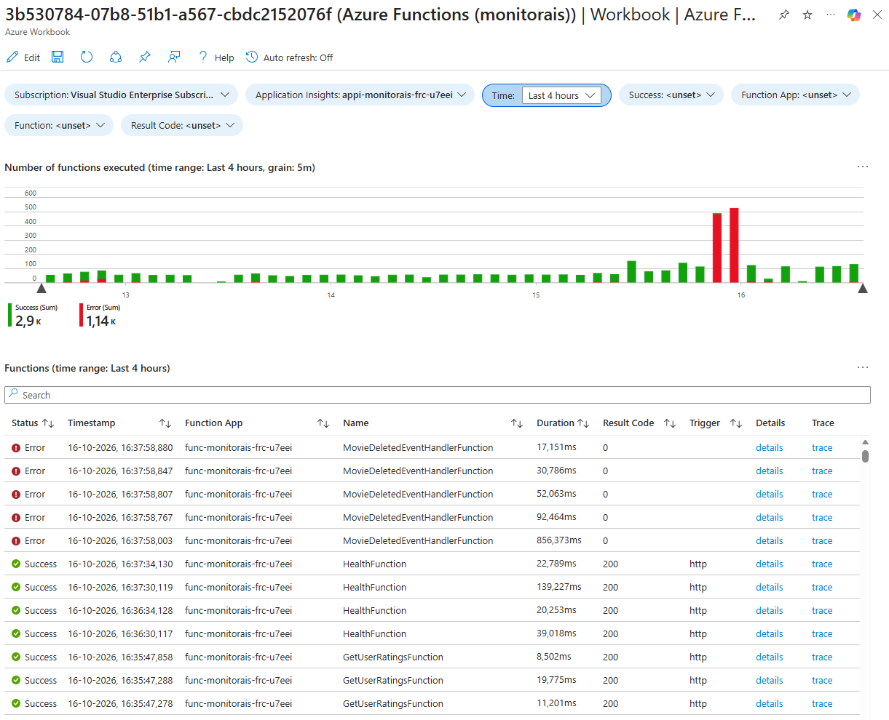

Azure Functions Workbook

I’ve been working with Azure Functions in integrations where several Function Apps log to the same Application Insights instance. When something goes wrong, I want to find the function execution that failed. In the Azure Portal you can view the invocations of a single function, but that means going through the functions one by one. The alternative is to use the search and filtering in Application Insights, but you’d have to set up the same filters every time.
In this post, I’ll walk through an Azure Workbook that shows all executed functions of all Function Apps that log to the same Application Insights. This makes it a lot easier to find the executions you’re looking for. I’ll explain the queries behind the workbook and how to deploy it.
This is the fifth post in my Monitoring Azure Integration Services series.
Table of Contents
- Sample Template
- Workbook Overview
- OpenTelemetry Logging
- Parameters
- Number of Functions Executed Graph
- Functions Table
- Deploying the Workbook
- Considerations
- Conclusion
Sample Template
I’ve created an Azure Developer CLI (azd) template called Monitor Azure Integration Services to demonstrate different monitoring approaches for Azure Integration Services, including dashboards, workbooks, health checks, alerts and health models. The workbook featured in this post is included in the template. The template has a sample application that lets users manage movies and submit or update ratings. It uses API Management, Azure Functions, Logic App workflows and Azure Service Bus. If you’d like to deploy and try the solution, follow the template’s getting started instructions. The template also includes a demo guide for this workbook.
Workbook Overview
The setup of this workbook is very similar to the API Management Requests Workbook. It has a graph with the number of functions executed over time and a table with the individual executions below it. Both can be filtered using the parameters at the top.

The definition file is Azure Functions.workbook.
I’m assuming you know a bit about editing Azure Workbooks. If not, have a look at Azure Workbook Tips & Tricks first.
OpenTelemetry Logging
The workbook queries the requests table in Application Insights and relies on the properties that Azure Functions logs when OpenTelemetry is enabled, like faas.name and faas.trigger. See Use OpenTelemetry with Azure Functions for how to enable OpenTelemetry in your app.
If you’re still using the Application Insights logging, the custom properties are different and the queries in this post won’t return any results. See Migrate Azure Functions project from Application Insights to OpenTelemetry for instructions on how to migrate to OpenTelemetry. The gist also contains an alternative query that you can use if you want to keep the current logging.
Parameters
The workbook has the following parameters at the top:
- Subscription and Application Insights: these let me deploy the workbook once and try it on different environments.
- Time: the time range used by all queries.
- Success: a hardcoded list with yes and no, to show only the successful or only the failed executions.
- Function App: a drop-down with the Function Apps that logged executions in the selected time range, filtered on the selected success value.
- Function: a drop-down with the functions that were executed, filtered on the selected success value and Function Apps.
- Result Code: a drop-down with the result codes that were logged, filtered on all of the above.
The result code depends on the type of function. An HTTP-triggered function logs the HTTP status code it returned, like 200 or 500. Other triggers don’t have a status code. A function that’s triggered by a Service Bus message, for example, logs a result code of 0, even when it fails. Because of that, I mostly use the Success parameter to find failed executions and the Result Code parameter for HTTP-triggered functions.
For a more detailed explanation on how to configure parameters in a workbook, see Azure Workbook Tips & Tricks - Parameters.
Number of Functions Executed Graph
The graph displays the number of functions executed over time, split by success and error. This is the query:
let successFilter = '{Success}';
let functionAppFilter = dynamic([{FunctionApp}]);
let functionFilter = dynamic([{Function}]);
let resultCodeFilter = dynamic([{ResultCode}]);
requests
| extend functionName = tostring(customDimensions['faas.name'])
| where functionName != '' // Only include Azure Function related requests
| where isempty(successFilter) or success == tobool(successFilter)
| where array_length(functionAppFilter) == 0 or cloud_RoleName in (functionAppFilter)
| where array_length(functionFilter) == 0 or functionName in (functionFilter)
| where array_length(resultCodeFilter) == 0 or resultCode in (resultCodeFilter)
| make-series numberOfRequests=sum(itemCount) default=0 on timestamp from todatetime("{TimeRange:startISO}") to todatetime("{TimeRange:endISO}") step {TimeRange:grain} by success
The query first puts the parameter values in variables. The multi-select parameters are turned into arrays with dynamic([...]). An empty array means nothing is selected, so those filters only apply when the array isn’t empty. The Success parameter is a single value, so it’s kept as a string. When it’s empty, the filter is skipped.
It then selects the requests logged by Azure Functions. Other types of services can log requests to the same Application Insights instance, so the query extracts the faas.name custom dimension and only keeps the requests where it has a value. Next, the filters are applied.
Finally, make-series sums itemCount for executions per success value and creates a time series. This has a few benefits:
- When Application Insights sampling is enabled,
itemCountaccounts for the executions represented by each retained telemetry item, so the graph shows an estimated execution count rather than just counting the sampled records. - With
make-series, the graph shows the entire selected period, even if nothing was executed at the start or end of the period. Asummarizewithbinwould only return time slots that have data. - The granularity is based on the TimeRange parameter by using
{TimeRange:grain}. This way, the granularity is automatically adjusted depending on the time range you’ve selected in the Time parameter.
The success column contains the values True and False. In the chart settings of the workbook, I’ve configured series labels, so they’re shown as Success (green) and Error (red).
I’ve enabled time brushing on this graph, which means you can select a time period in the graph and all data in the workbook will be filtered accordingly. See Azure Workbook Tips & Tricks - Time Brushing for how to configure this.
Functions Table
The table lists the individual function executions. This is the query:
let successFilter = '{Success}';
let functionAppFilter = dynamic([{FunctionApp}]);
let functionFilter = dynamic([{Function}]);
let resultCodeFilter = dynamic([{ResultCode}]);
requests
| extend functionName = tostring(customDimensions['faas.name'])
| where functionName != '' // Only include Azure Function related requests
| where isempty(successFilter) or success == tobool(successFilter)
| where array_length(functionAppFilter) == 0 or cloud_RoleName in (functionAppFilter)
| where array_length(functionFilter) == 0 or functionName in (functionFilter)
| where array_length(resultCodeFilter) == 0 or resultCode in (resultCodeFilter)
| extend status = iff(success==true, 'success', 'error')
| extend functionTrigger = tostring(customDimensions['faas.trigger'])
| project
status,
timestamp,
cloud_RoleName,
functionName,
duration,
resultCode,
functionTrigger,
details = itemId,
trace = itemId
| sort by timestamp desc
The first part is the same as in the graph query: it selects the function executions and applies the filters. The difference is the last part, where the query determines a status, extracts the trigger and uses project to select and order the columns for the table:
statusissuccessorerrorand is rendered as an icon.cloud_RoleNameis the name of the Function App andfunctionNameis the name of the function. The workbook shows them as Function App and Name.durationis the duration of the execution.resultCodeis the result code of the execution.functionTriggeris the type of trigger, extracted from thefaas.triggercustom dimension.detailsandtraceboth contain theitemIdof the request. The Details link opens the request details in a context pane. The Trace link opens the end-to-end transaction details.
Which fields are filled differs per type of function:
- Not every function logs the trigger. For an HTTP-triggered function it’s set to
http, but for a function triggered by a Service Bus message it’s empty for example. - Not every function has a meaningful result code. A function triggered by a Service Bus message has a result code of 0, as you can see in the screenshot.
The table sorts by timestamp in descending order, so the most recent executions are shown first. I’ve configured the workbook to show a maximum of 1000 rows, so use the filters or time brushing to narrow down the results if needed. The search field above the table lets you search through all columns.
See Azure Workbook Tips & Tricks - Table for more info on configuring, styling and formatting tables.
Deploying the Workbook
I use a generic module to deploy the workbook, as described in Deploy Azure Workbooks with a Reusable Bicep Module. The module is used in this main.bicep of the sample template. Here’s a short snippet:
module azureFunctionsWorkbook './modules/workbooks/workbook.bicep' = {
scope: resourceGroup(resourceGroupName)
params: {
environmentName: environmentName
location: location
tags: tags
displayName: 'Azure Functions'
serializedData: string(loadJsonContent('./modules/workbooks/Azure Functions.workbook'))
placeholders: {
AzureSubscriptionId: subscription().subscriptionId
ApplicationInsightsId: appInsights.id
}
sourceId: appInsights.id
}
}
You can also deploy the workbook manually, as described here.
Considerations
Similar to the other workbooks, sampling is something to consider. Queries over Application Insights data can show incomplete results when telemetry is sampled, because some of the executions are then missing from the graph and the table. Whether your Function Apps sample depends on how you’ve configured OpenTelemetry. See Sampling in Azure Application Insights with OpenTelemetry for the details and check how your Function Apps are configured. You can check the retained percentage with this query:
union requests, dependencies, pageViews, browserTimings, exceptions, traces
| where timestamp > ago(1d)
| summarize retainedPercentage = 100 / avg(itemCount)
by bin(timestamp, 1h), itemType, cloud_RoleName
Beware that logging every function execution increases the amount of telemetry, which increases cost as well. Functions that run often, like a timer trigger or a Service Bus trigger that processes many messages, can add up quickly. Keep an eye on the ingestion volume of your Application Insights instance. If the cost becomes an issue, you can configure sampling.
Conclusion
This workbook makes it easier to find specific function executions across multiple Function Apps. It solves that with filters on success, Function App, function and result code, a graph for the trend and a table with the executions. The Trace link then takes me straight to the end-to-end transaction details.
The workbook is a starting point. Not every field is filled for every type of function, so adjust the queries and columns to fit the triggers you use.